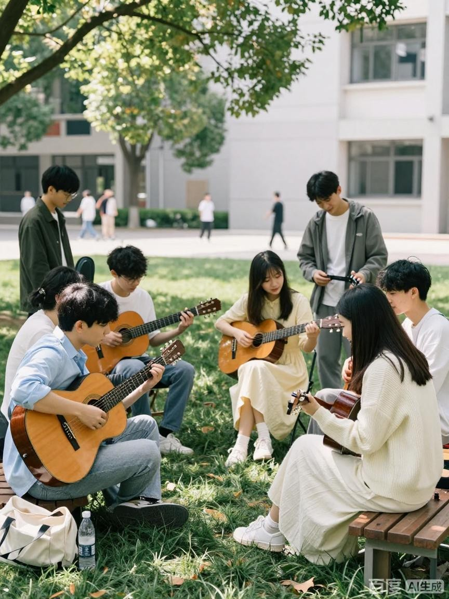

社团简介 | 活动安排 | 风采展示 | 社员故事 | 在线报名
吉他社是本校富有活力的器乐社团，以传播吉他音乐、丰富校园文艺生活为宗旨，面向全校热爱吉他、想要学习弹唱与指弹的同学开放。无论有无乐器基础，只要心怀热爱都可以加入。社团长期开设零基础公开课，由高年级社员授课，从持琴姿势、基础和弦、右手节奏开始教学，帮助新手入门。我们会举办草坪音乐会、合奏排练、歌曲改编分享会，大家一起扒谱、合奏、创作。这里没有门槛，民谣、流行、指弹、摇滚爱好者都能找到同好。音乐不需要高超技巧，重要的是愿意拨动琴弦，唱出心底的旋律。吉他社希望成为音乐爱好者的自留地，让每一位成员在琴弦之间收获浪漫与陪伴。
| 吉他社 2026 春季学期活动安排表 | |||
|---|---|---|---|
| 活动名称 | 时间 | 地点 | 备注 |
| 新成员见面会 | 第 2 周周六晚 19:00 | 文艺楼 203 | 新人认识、介绍社团规章 |
| 吉他基础教学公开课 | 第 3 周周六晚 19:00 | 文艺楼 203 | 零基础免费教学 |
| 草坪弹唱音乐会 | 第 6 周周五傍晚 | 中心草坪 | 自由上台弹唱 |
| 学期合奏汇演 | 第 15 周周日 14:00 | 学校大礼堂 | 学期成果展示 |
点击图片查看活动详情
